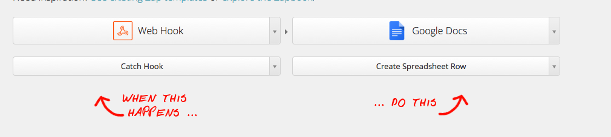

This library injects a button into a linkedin profile page. when the button is pressed, the linkedin page's
contents are scraped. This scrapped data is POST to a HTTP webhook.
Form fields
experience
years_of_experience
summary
name
education_name
education_degree
education_major
education_start
education_end
connections_names
connections_number
Zapier Setup
Go to zapier.com and login with your account
Next create a new Zap
The zap takes in a webhook (catch hooks) and exports to google docs (create spreadsheet rows)

Next select the google spreadsheet/tab you'd like to use. That google spreadsheet should have the first row's columns filled with all the form fields. And the second row of each column should have '------' filled in.
Once zapier successfully reads your spreadsheet, add the webhook url they give you to this form file and hit save. Then navigate to a random linkedin profile and click 'save to google docs'. This will pre-populate zapier's auto suggestions
Now back in zapier go to step 5, and click on insert fields for each input and select the proper field/data
Now click on turn on Zap and enjoy!
Template Setup
To inject profile information simply write the relevant profile form field wrapped in two curly brases.
For example:
Hi {{name}},
I saw that you had {{years_of_experience}} years of work experience,
and you'd be a great fit for Example Company.
Can't wait to chat,
-Bob